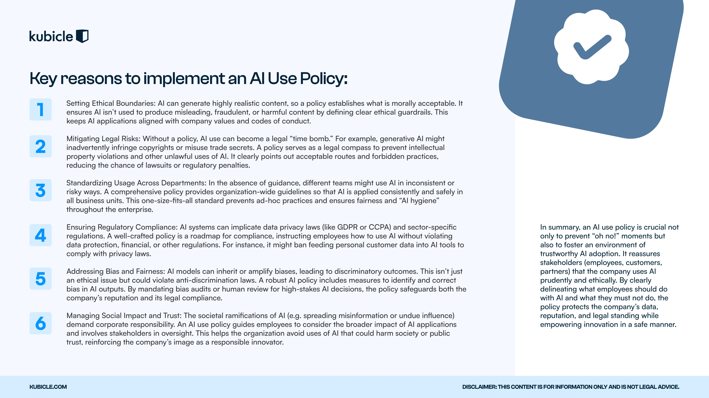
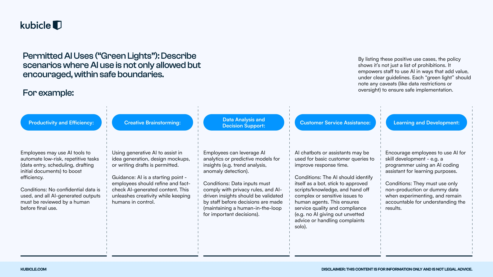

Build a clear, compliant and responsible AI use policy that protects your organisation while enabling innovation. A practical step-by-step framework, ready-made template, and real-world examples in one downloadable PDF.
Without an AI use policy in place, even well-intentioned employees can expose the organisation to data leaks, compliance violations, and reputational damage. Here are the five risks the framework helps you control.
A single misuse of public AI can become a headline. Without clear guardrails, a single employee's prompt can damage years of brand trust.
Employees pasting confidential code or customer data into public AI tools have already cost Amazon and Samsung major incidents. Without rules, your data is one prompt away from leaving.
Without an AI governance policy in place, leaders have no oversight of which tools teams are using, what they are feeding them or whether outputs are trustworthy.
Unchecked AI models can amplify bias and discrimination, with legal and ethical consequences. A policy mandates bias review and human-in-the-loop for high-stakes decisions.
The EU AI Act, GDPR and emerging US state laws demand documented AI governance and "sufficient AI literacy" inside organisations. A policy is the foundation for compliance.
Without standards, every team adopts different tools at different paces. Budgets bleed, outcomes diverge and the ROI of AI adoption never lands.
This free guide provides the structure and clarity you need to create or refine your AI policy. Built from real enterprise rollouts, including what to copy and what to avoid.


A structured AI adoption framework that walks your organisation through each stage of creating and implementing an AI use policy, from initial audit to ongoing review.
A company AI policy template that spells out permitted uses ("green lights") and prohibited uses ("red lines"), giving teams clear rules they can follow with confidence.
Develop a responsible AI policy that enables innovation while ensuring your business stays compliant with GDPR, the EU AI Act, and sector-specific regulations.
Practical cases (Amazon, Samsung and more) of how an AI governance policy would have prevented data leaks, supported safe scaling and built trust across the enterprise.
These are the kind of stories the framework helps you prevent. Both happened to organisations with mature security programs. Neither happened with malice.
Amazon employees pasted proprietary source code into ChatGPT to debug it. ChatGPT later produced outputs containing Amazon's internal data, raising a serious concern that confidential information could surface in another user's results.
Samsung engineers input confidential chip design code into a public AI chatbot. The data was stored on external servers outside company control, triggering an immediate internal ban on generative AI tools and a rewrite of their AI policy.
Building a strong AI use policy is the first step. The next is equipping every employee with the skills to apply it. Kubicle delivers enterprise AI literacy training trusted by Fortune 500 companies, professional service firms and government bodies.
Four-tier AI Literacy Academy: AI Apprentice, Navigator, Architect and Strategist. Every employee from intern to executive lands on the right pathway.
Course exams earn CPD, CPE and NASBA accreditation, so your training also delivers proof of literacy required by the EU AI Act.
Persona-mapped pathways for every level: the intern and graduate, the early-career hire, the data-fluent project lead, the senior leader.
See the full pathway on the AI Literacy Academy page.
Download the framework, then talk to a Kubicle program designer about rolling AI literacy across your workforce in days, not quarters.